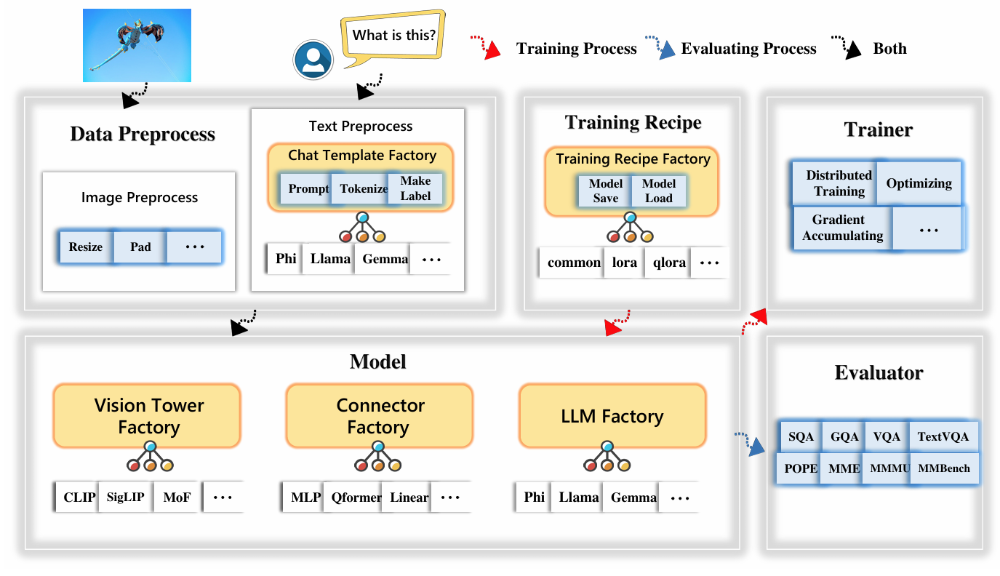
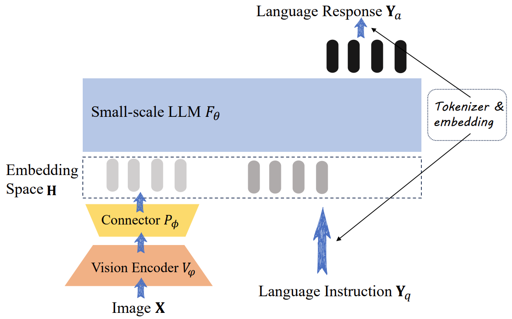
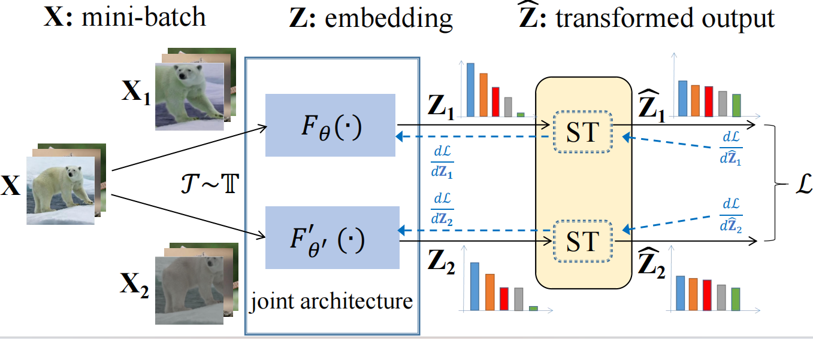
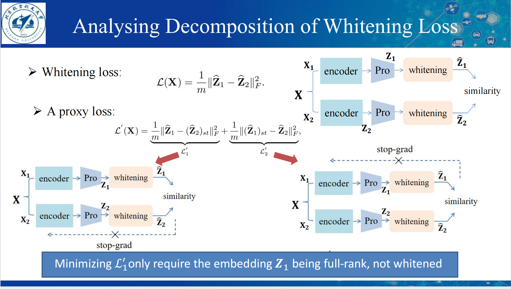

Xi Weng is a Master student in BUAA, Beijing, China.
His research direction is self-supervised learning and language-image pre-training.
NEWS Jan 2024: One paper is accepted by ICLR 2024.
NEWS Sep 2022: One paper is accepted by NeurIPS 2022.
Publications
I am addicted to understanding the mechanism of self-supervised learning.

TinyLLaVA Factory: A Modularized Codebase for Small-scale Large Multimodal Models
Junlong Jia, Ying Hu, Xi Weng, Yiming Shi, Miao Li, Xingjian Zhang, Baichuan Zhou, Ziyu
Liu, Jie Luo, Lei Huang, Ji Wu
arXiv:2405.11788
(co-first author)

TinyLLaVA: A Framework of Small-scale Large Multimodal Models
Baichuan Zhou, Ying Hu, Xi Weng, Junlong Jia, Jie Luo, Xien Liu, Ji Wu, Lei Huang
arXiv:2402.14289

Modulate Your Spectrum in Self-Supervised Learning
Xi Weng, Yunhao Ni, Tengwei Song, Jie Luo, Rao Muhammad Anwer, Salman Khan, Fahad Khan, Lei Huang
International Conference on Learning Representations(ICLR), 2024

Understanding Whitening Loss in Self-supervised Learning
Lei Huang, Yunhao Ni, Xi Weng, Rao Muhammad Anwer, Salman Khan, Ming-Hsuan Yang, Fahad Shahbaz Khan
Transactions on Pattern Analysis and Machine Intelligence(TPAMI), 2023
An Investigation into Whitening Loss for Self-supervised Learning
Xi Weng, Lei Huang, Lei Zhao, Rao Muhammad Anwer, Salman Khan, Fahad Shahbaz Khan
Advances in Neural Information Processing Systems(NeurIPS), 2022 (Spotlight)
Education
- Sep. 2022 - Sep. 2025
- Master student in Institute of Artificial Intelligence, Beihang University
- Advisor: Profs. Lei Huang
- Sep. 2018 - Jun. 2022
- Undergraduate in Institute of Artificial Intelligence, Beihang University
- Advisor: Profs. Lei Huang
Awards and Honors
China National Scholarship, 2023.
Excellent Academic Innovation Achievement Award, 2023.
Academic Excellence Scholarship in Beihang University, 2023.
Excellent Freshman Scholarship in Beihang University, 2022.
Academic Excellence Scholarship in Beihang University, 2018.
Source Code
Miscellaneous
- I also have great interest in fitness, singing and guitar.